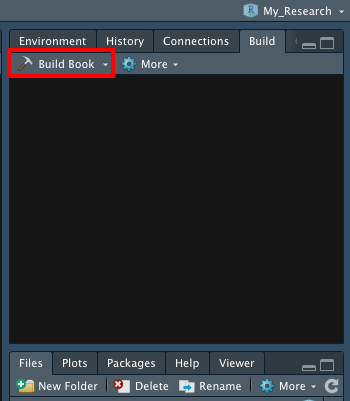

Section 2 Host Bookdown on Github
Before anything, I highly suggest going through Bookdown: Authoring Books and Technical Documents with R Markdown in order to understand the basics to setting up your own bookdown.
2.1 Getting Bookdown started
- From the Get started page download the Zip file, then unzip it locally.
- Install the RStudio IDE (you need a version higher than 1.0.0)
- Install the R package bookdown:
# stable version on CRAN
install.packages('bookdown')
# or development version on GitHub
# devtools::install_github('rstudio/bookdown')You should now have a folder called bookdown-demo-master which contains exemple chapters, an index and files needed for the Bookdown.
In the Bookdown-demo-master folder
- Create a folder called
docsand leave it empty - Look for a file called
_bookdown.yml - Open the file
- Add
output_dir: "docs"
Exemple :
2.2 Github Repository
Create a repository online
- Create a repository on Github where you will host your Bookdown (exemple
test_book) - Copy the repository link generated by Github

Clone the newly created repository on your computer
- Open a terminal window
- Navigate to the folder where you want to have your Bookdown
- To clone your repository use the command
git clone
Exemple :
In this exemple, the Github link would be replaced by the link you copied earlier.
2.3 From Bookdown to Github
Copy the entire content of the Bookdown folder into the new folder create by cloning the repository. In this case this folder is called test_book
Now you can start modifying the content of your book by opening each chapter.
What is now very important is that, once you knit your R Markdown, the ouput HTML will be created into the folder docs (the one we created earlier). This is important because Github will use the files from the folder docs to generate the Github page.
2.4 Knit and upload to github

To upload your Bookdown to your github
Buil book
- Open the file with the extension
.Rproj - Click on
Buil Bookunder theBuildtab on the right
If you navigate to the folder docs you should now see that it contains a HTML copy of every chapter
Update your online repository
- Open a terminal window and navigate to the repository folder now containing all the bookdown file
- Write the following command in order
- git status
- git add -f *
- git commit
- git push
- Go to your online Github repository, all the files and folders from your local folder should be there
- Go to
Settings - Scroll down to the section
Github Pages - Click on button
Noneand from the dropdown menu selectMaster - Click the
/(root)button and from the dropdown menu select/(docs) - Click
Save - The page will refresh, and now if you scroll back down to the section
Github Pagesyou will see the URL of your Book
Exemple

Voilà